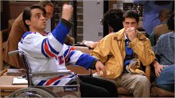
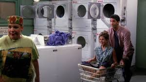
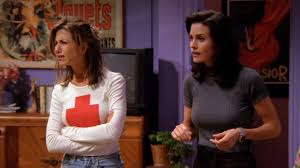
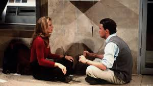
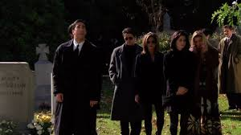
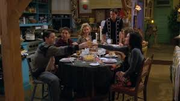
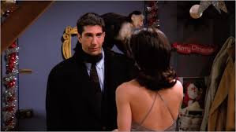

Episodes
Season 1

1.Pilot
An introduction to the gang. After Rachel leaves her Mr Potato
Head
look-alike fiancé Barry at the altar, she moves in with Monica and discovers that
independence sucks when you
don't have Daddy's credit cards to rely on.
Meanwhile, Chandler and Joey encourage Ross to experience the advantages of bachelorhood,
and Phoebe supports herself by playing guitar in the subway.

2.The One with the Sonogram at the End
Ross's lesbian ex-wife is pregnant with his child, and he doesn't
like her choice of last name for the baby. Elsewhere, Rachel finds out that her ex-fiancé
went on what would have been their honeymoon with her maid of honor..

3.The One with the Thumb
Monica finds it difficult to break up with her latest boyfriend
whom everyone likes, Chandler is reunited with his beloved cigarettes, and Phoebe receives a
large sum of money..

4.The One with George Stephanopoulos
While the men attend a hockey game and end up at a hospital, the
women spy on President Clinton's top aide, George Stephanopoulos, who lives across the
street. Meanwhile, Rachel receives her first pay packet.

5.The One with the East German Laundry Detergent
While Chandler and Phoebe decide to break up with their
significant others on the same night, Ross and Rachel have their first date doing laundry
together.

6.The One with the Butt
An agent offers Joey a movie role as Al Pacino's naked body
double, Ross tries to be less conservative, and Chandler thinks his fantasies have come true
when he has an affair with a married woman.

7.The One with the Blackout
A power cut leaves Chandler stranded in a bank with a gorgeous
woman, Ross tries to ask Rachel out on a date, and Joey learns that Monica used to be
infatuated with him.

8.The One Where Nana Dies Twice
Monica and Ross mourn the death of their grandmother with a
little help from the gang, and Monica and her mum come to an unspoken understanding about
the relationship between mothers and daughters. Meanwhile, Chandler is irritated by office
speculation that he is gay.

9.The One Where Underdog Gets Away
Monica's first Thanksgiving dinner for the gang goes horribly
wrong when they all get locked on the roof after watching a giant runaway balloon from the
New York Thanksgiving parade. Elsewhere, Joey wins his first modeling gig as the poster boy
for a venereal disease campaign, and Ross competes with his ex-wife to communicate with
their unborn baby.

10.The One with the Monkey
As New Year approaches, the gang make a pact to celebrate at
Monica and Rachel's flat without bringing any dates. However, as the New Year gets closer,
all of them find themselves breaking that promise except for Ross, who brings along his new
pet monkey Marcel.
1.Pilot
An introduction to the gang. After Rachel leaves her Mr Potato Head look-alike fiancé Barry at the altar, she moves in with Monica and discovers that independence sucks when you don't have Daddy's credit cards to rely on. Meanwhile, Chandler and Joey encourage Ross to experience the advantages of bachelorhood, and Phoebe supports herself by playing guitar in the subway.
2.The One with the Sonogram at the End
Ross's lesbian ex-wife is pregnant with his child, and he doesn't like her choice of last name for the baby. Elsewhere, Rachel finds out that her ex-fiancé went on what would have been their honeymoon with her maid of honor..
3.The One with the Thumb
Monica finds it difficult to break up with her latest boyfriend whom everyone likes, Chandler is reunited with his beloved cigarettes, and Phoebe receives a large sum of money..
4.The One with George Stephanopoulos
While the men attend a hockey game and end up at a hospital, the women spy on President Clinton's top aide, George Stephanopoulos, who lives across the street. Meanwhile, Rachel receives her first pay packet.
5.The One with the East German Laundry Detergent
While Chandler and Phoebe decide to break up with their significant others on the same night, Ross and Rachel have their first date doing laundry together.
6.The One with the Butt
An agent offers Joey a movie role as Al Pacino's naked body double, Ross tries to be less conservative, and Chandler thinks his fantasies have come true when he has an affair with a married woman.
7.The One with the Blackout
A power cut leaves Chandler stranded in a bank with a gorgeous woman, Ross tries to ask Rachel out on a date, and Joey learns that Monica used to be infatuated with him.
8.The One Where Nana Dies Twice
Monica and Ross mourn the death of their grandmother with a little help from the gang, and Monica and her mum come to an unspoken understanding about the relationship between mothers and daughters. Meanwhile, Chandler is irritated by office speculation that he is gay.
9.The One Where Underdog Gets Away
Monica's first Thanksgiving dinner for the gang goes horribly wrong when they all get locked on the roof after watching a giant runaway balloon from the New York Thanksgiving parade. Elsewhere, Joey wins his first modeling gig as the poster boy for a venereal disease campaign, and Ross competes with his ex-wife to communicate with their unborn baby.
10.The One with the Monkey
As New Year approaches, the gang make a pact to celebrate at Monica and Rachel's flat without bringing any dates. However, as the New Year gets closer, all of them find themselves breaking that promise except for Ross, who brings along his new pet monkey Marcel.